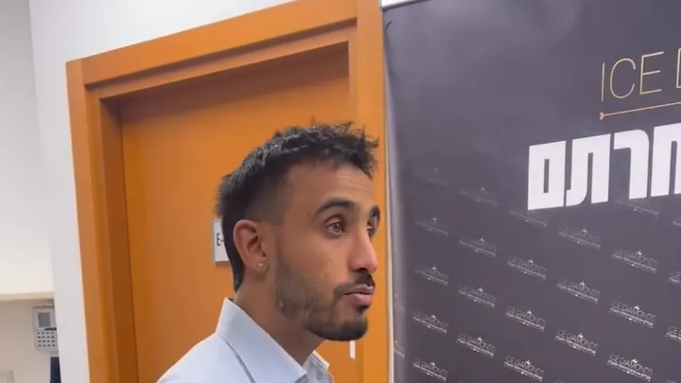
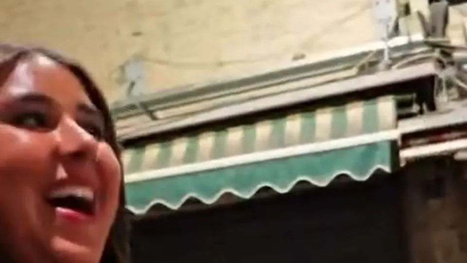
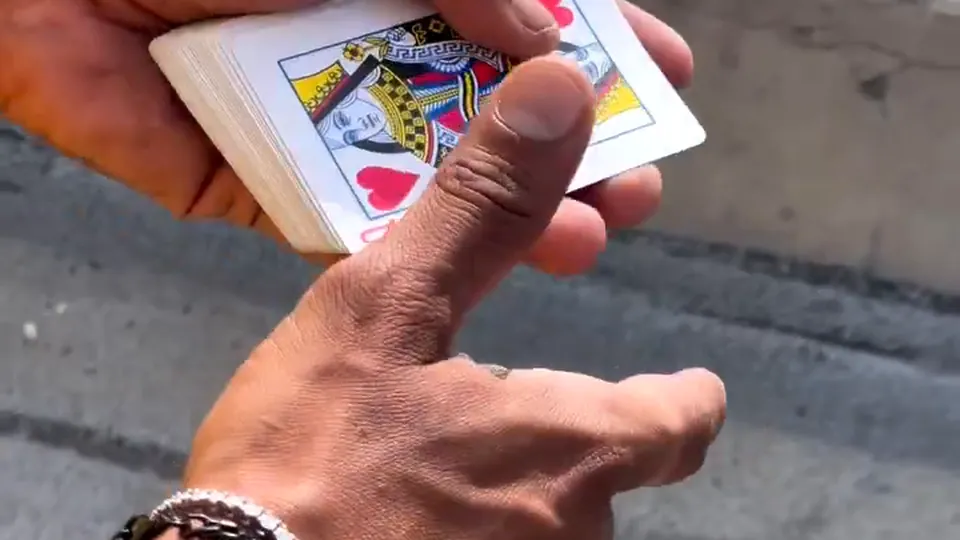
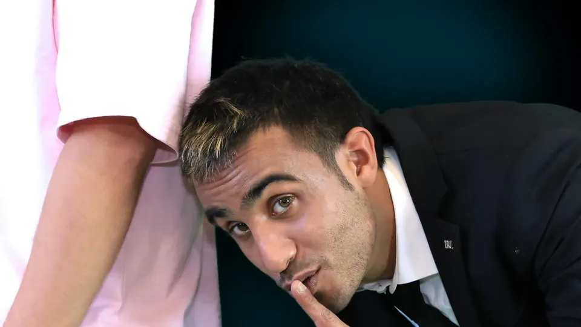
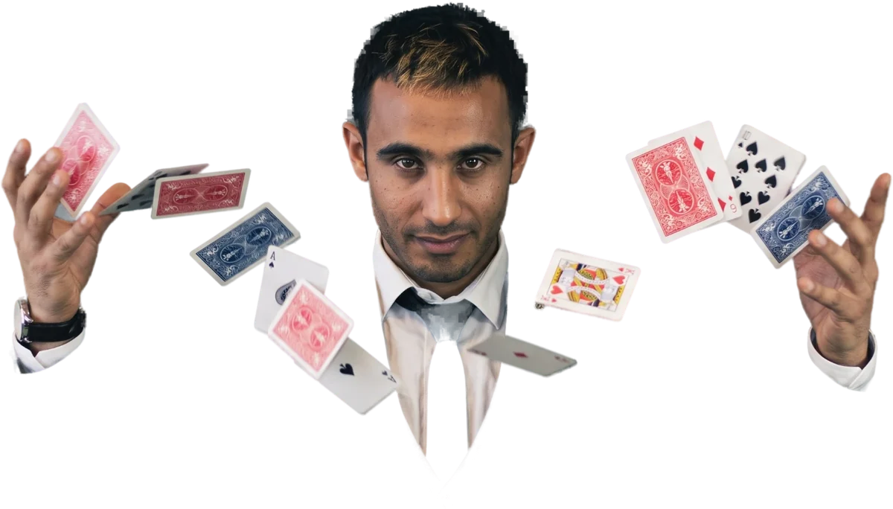

מופע הקסמיםוהכיוסים של נירלוי
על הבמה
הקהל שלכם עומד להישאר בלי מילים. ואולי גם בלי השעון...
לתיאום בוואטסאפ: 0503822282
"איפה נעלם לי הטלפון?!"
ניר לוי. הכייס מספר 1 בישראל ואמן חושים בינלאומי.
צפו בקטע מתוך אירוע בחברת אייס דיימונדס
בלי מצלמה, בלי עוזרים.חשבו על קלף
הסתכלו על ששת הקלפים. בחרו אחד בראש. אל תלחצו עליו, רק תזכרו אותו.
ניר קורא את המחשבה שלכם
הקלף שלכם נעלם. ככה זה מרגיש מקרוב. במופע זה קורה עם השעון שלכם.
- J♠♠
- Q♦♦
- K♥♥
- J♦♦
- Q♣♣
- K♠♠
הקסם הזה עובד בדפדפן עם JavaScript. בלי זה, פשוט תדמיינו שהקלף שלכם נעלם.
מה קורה כשנירעולה לבמה
-

קריאת מחשבות
אתם חושבים על מילה. לא אומרים כלום. ניר אומר אותה בקול.
-

האהבה הראשונה
השם שלא סיפרתם לאף אחד. ניר מגלה אותו מול כולם.
-

הקלף שלכם
בחרתם בסתר. הקלף מחכה לכם בכיס.
-

הכייסות
השעון, הארנק, הטלפון. כולם אצלו. אתם מגלים אחרונים.
כבר נהנומהמופע
20 שנה על הבמה,ועדיין אף אחד לא גילה איך
ניר לוי הוא אמן חושים וקוסם עם 20 שנות ניסיון על במות בארץ ובעולם. המופע שלו משלב קריאת מחשבות, קסמי קלפים והתמחות נדירה בישראל: אמנות הכייסות.
בלי עוזרים, בלי ציוד מסובך. רק ניר, הקהל, והרגע שבו אף אחד באולם לא מבין מה קרה.
מופע שמתאיםלכל במה


חתונות
הפסקה מפתיעה בין החופה לריקודים, שמחברת את כל האורחים סביב שולחן אחד.
בר ובת מצווה
הנער או הנערה במרכז הבמה, וכל המשפחה בהלם.
אירועי חברה וכנסים
ערב גיבוש, כנס שנתי או השקה. הקטע שכולם זוכרים מהאירוע, גם בשבוע הבא.
ימי הולדת
מתנה שאי אפשר לעטוף. גם לחוגגים בני 40, גם בני 70.
אירועים פרטיים
ערב בסלון עם חברים קרובים. קסמים מקרוב, בגובה העיניים.
עוקבים אחרי נירבאינסטגרם
@nirolevi10שאלותשכולם שואלים

כמה זמן נמשך המופע?
מופע במה נמשך בין 45 ל-60 דקות. קסמים מקרוב בין השולחנות נמשכים לפי אורך האירוע, בדרך כלל שעה עד שעתיים.
לכמה אנשים המופע מתאים?
מ-20 משתתפים בערב אינטימי ועד מאות אורחים באולם. המופע מותאם מראש לגודל הקהל ולמרחב.
מה צריך להכין מראש?
כמעט כלום. במופע במה נדרשים מיקרופון ומקום שממנו הקהל רואה את ניר. את כל השאר הוא מביא איתו.
האם המופע מתאים גם לילדים?
המופע נבנה לקהל בוגר ולמשפחות, ומותאם לאופי האירוע. ניר מתאם איתכם מראש את התוכן והאווירה.
לאן ניר מגיע?
לכל הארץ, מהצפון ועד אילת. בתיאום מראש גם לאירועים בחו"ל.
איך מזמינים מופע?
משאירים שם, טלפון ותאריך בטופס באתר או שולחים הודעה בוואטסאפ. ניר חוזר אליכם אישית ושומר לכם את התאריך.
האורחים שלכם מוכניםלהישאר בלי מילים?
התאריכים מתמלאים מהר, במיוחד סביב החגים ועונת החתונות.
או בטלפון: 050-3822282